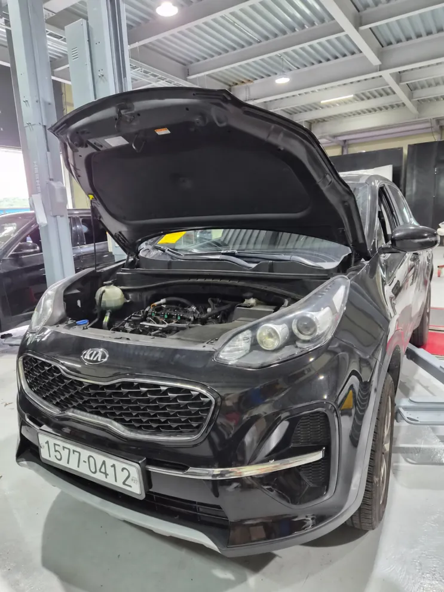
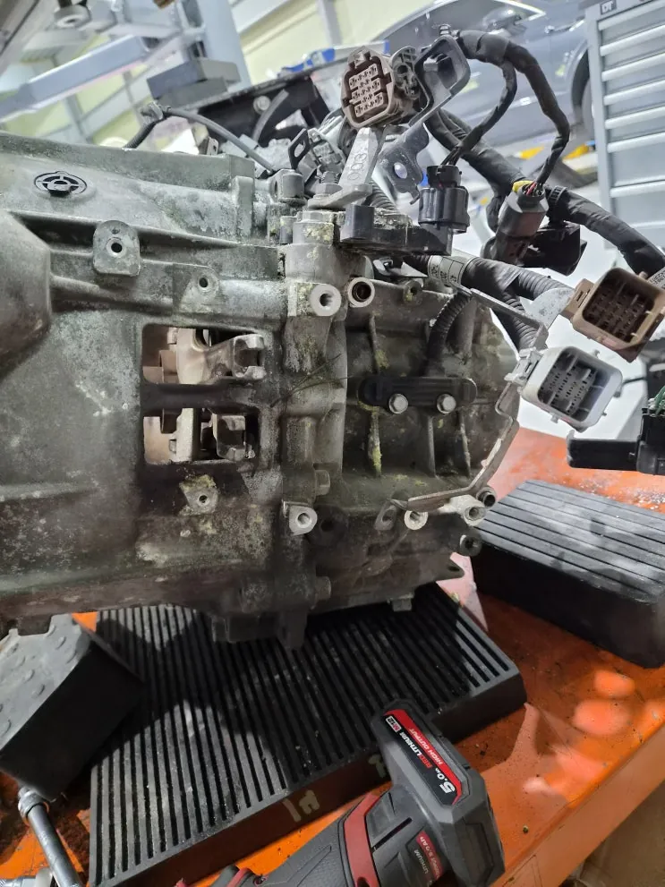
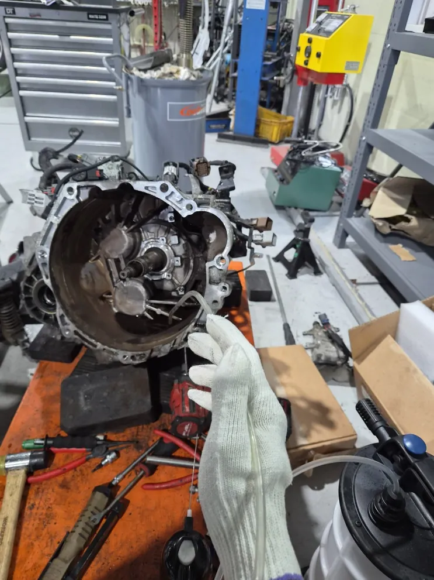
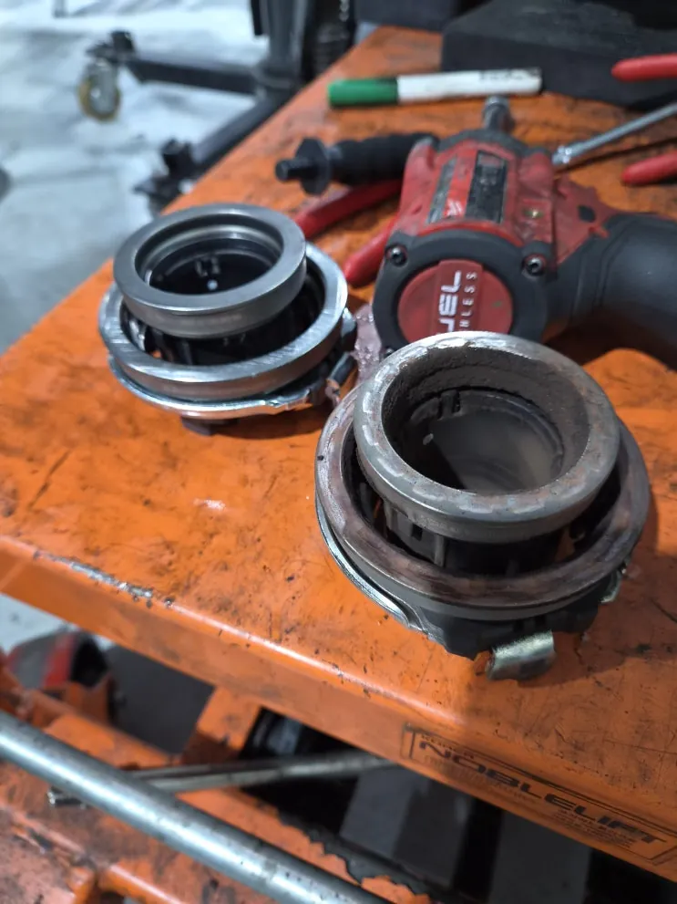
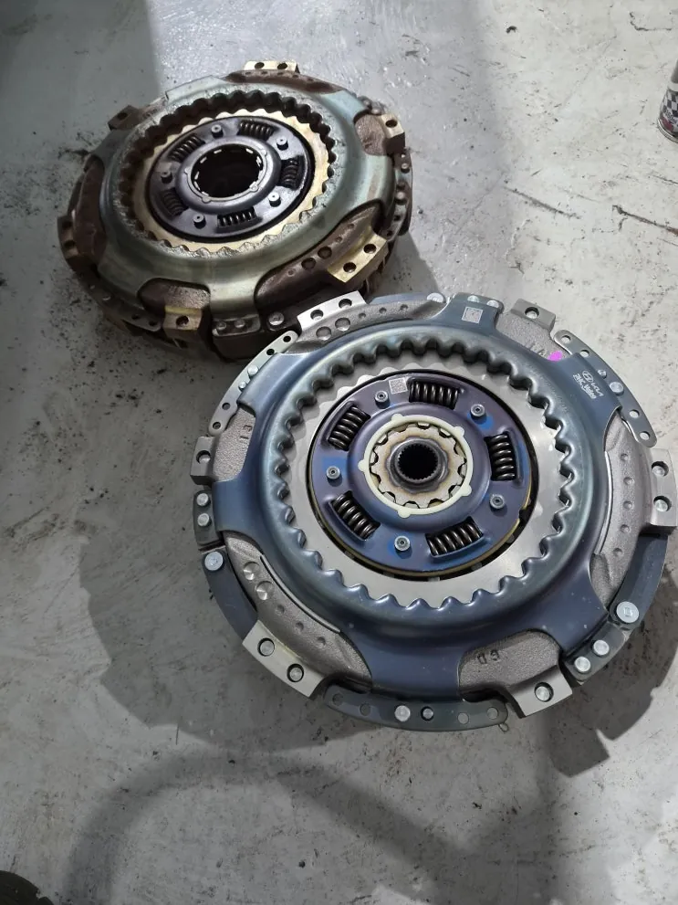
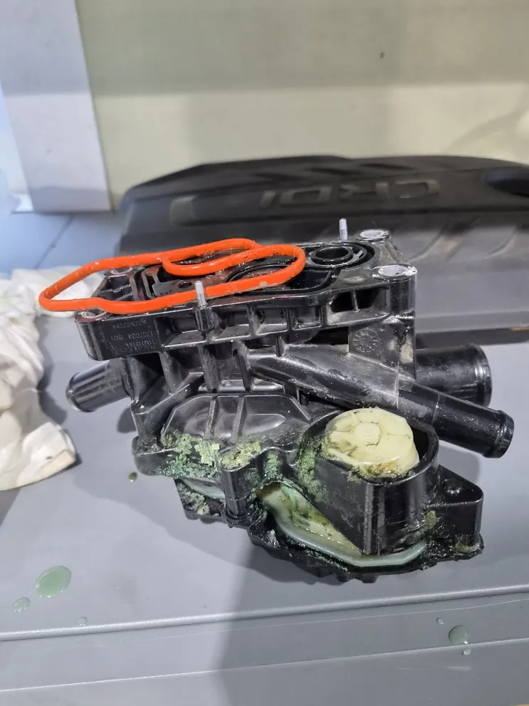
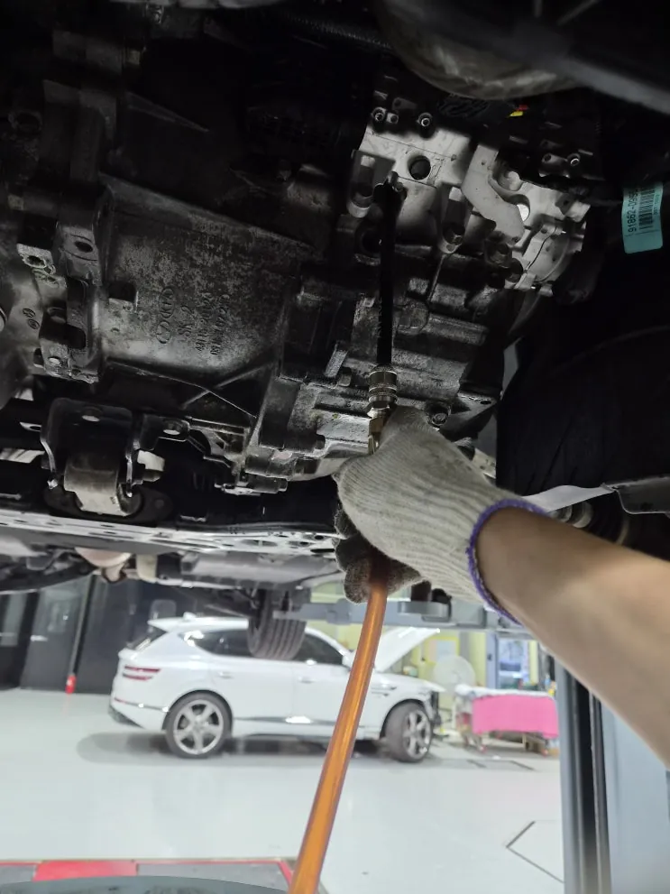
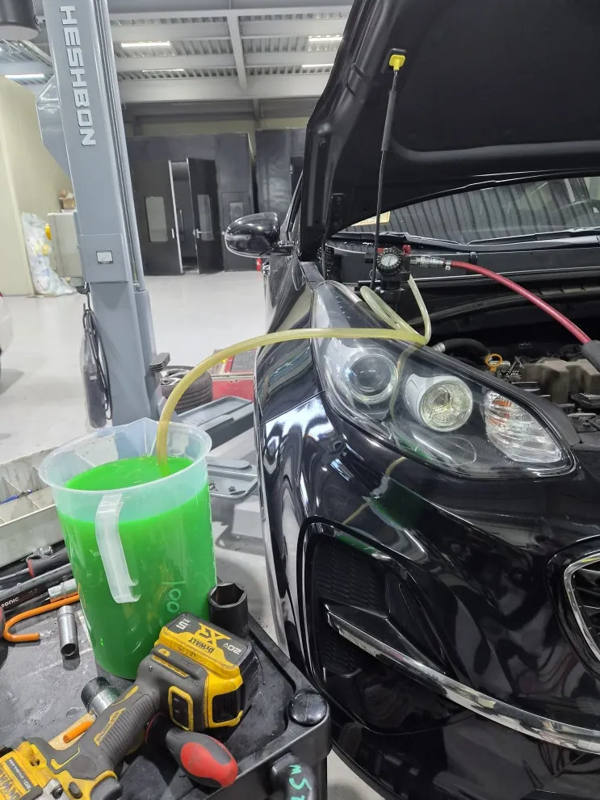

스포티지 홀수 기어 변속 불능, 클러치팩·엑추에이터 교환
한눈에 보기
짝수단은 되는데 1·3·5단만 들어가지 않던 기아 스포티지는 클러치팩 마모, 클러치 엑추에이터 작동 이상, 더블 스러스트 베어링 마모가 겹친 것이 원인이었고, 성능보험사와 작업 범위를 협의해 승인된 부품을 새것으로 교환한 뒤 모든 단의 변속을 확인했습니다.
- 차량
- 기아 스포티지
- 증상
- 홀수단(1·3·5단) 변속 불능
- 짝수단 정상
- 작업
- 변속기 탈거·케이스 개방
- 클러치 작동부 점검
- 성능보험 접수·협의
- 클러치팩 어셈블리 교환
- 클러치 엑추에이터 교환
- 더블 스러스트 베어링 교환
- 개스킷·오일씰 점검
- 재조립
- 변속 확인
- 작업장
- 그릿서비스 · 경기도 파주시 교하로 1312-53, 1동 1층

입고 증상
기아 스포티지가 홀수 기어인 1·3·5단으로 변속되지 않는 증상으로 입고됐습니다. 짝수단은 정상으로 들어갔습니다. 특정 계열의 단수에서만 문제가 생긴 만큼, 그 계열을 맡는 클러치와 작동 계통을 중심으로 진단했습니다. 성능보험 접수로 진행한 건입니다.


원인을 좁힌 방법
이 차의 듀얼클러치 변속기(DCT)는 클러치가 두 개입니다. 하나는 홀수단, 다른 하나는 짝수단을 맡아 번갈아 붙었다 떨어지며 변속합니다. 그래서 한쪽 클러치나 그 작동 계통에 문제가 생기면 반대쪽 단은 멀쩡한데 홀수단이나 짝수단 한쪽만 변속이 안 되는 증상이 나타날 수 있습니다.
정확한 원인을 보기 위해 변속기를 차에서 내리고 케이스를 열어 내부와 클러치 작동부를 점검했습니다.

점검·진단 결과
더블 스러스트 베어링: 마모가 확인됐습니다.
클러치 엑추에이터: 정상 작동을 유지하기 어려운 상태로 판단했습니다. 엑추에이터에 이상이 있으면 클러치팩 자체가 멀쩡해도 붙었다 떨어지는 동작이 제대로 되지 않아 변속 충격, 변속 지연, 특정 단의 변속 불능이 생길 수 있습니다.
플라이휠·클러치팩: 분리해 보니 클러치 마찰재가 상당히 닳아 있었습니다. 기존 부품과 새 부품을 나란히 놓으면 마찰재 두께 차이가 뚜렷하게 보였습니다.
정리하면 이번 홀수단 변속 불능은 클러치팩 어셈블리 마모, 클러치 엑추에이터 작동 이상, 더블 스러스트 베어링 마모가 함께 작용한 결과로 판단했습니다.


성능보험 협의와 교환 작업
진단 결과를 근거로 성능보험사와 작업 범위를 협의했고, 승인된 성능보증 범위에 따라 클러치팩 어셈블리, 클러치 엑추에이터, 더블 스러스트 베어링을 새 부품으로 교환했습니다.
부품을 바꾼 뒤 변속기 케이스를 다시 조립하면서 개스킷과 오일씰 상태도 확인했습니다. 조립이 어긋나면 나중에 오일이 새는 2차 문제가 생길 수 있어 조립 상태를 꼼꼼히 봤습니다.

출고 점검
변속 작동 상태를 확인하고, 홀수단과 짝수단이 모두 정상으로 들어가는 것을 확인한 뒤 작업을 마쳤습니다.
홀수단이나 짝수단처럼 한 계열의 기어만 안 들어갈 때는 클러치팩만 볼 것이 아니라 플라이휠, 클러치 엑추에이터, 스러스트 베어링, 시프트 포크와 입력축, 관련 배선과 제어 신호까지 함께 점검해야 원인을 정확히 찾을 수 있습니다. 변속 지연이나 충격, 특정 단 변속 불능을 그대로 두고 타면 다른 변속기 부품에도 부담이 커져 수리 범위가 넓어질 수 있습니다.

자주 묻는 질문
왜 홀수 기어만 안 들어갈 수 있나요?
듀얼클러치 변속기는 홀수단과 짝수단을 서로 다른 클러치가 맡기 때문에, 한쪽 클러치나 그 작동 계통에 이상이 생기면 그 계열의 단만 변속이 안 될 수 있습니다.
클러치팩만 바꾸면 해결되나요?
이번 차량처럼 엑추에이터와 스러스트 베어링 이상이 함께 있을 수 있어, 클러치 작동 계통 전체를 점검한 뒤 교환 범위를 정합니다.
스포티지, 비슷한 증상이라면 사진부터 보내 주세요
파주·운정·교하·금촌 어디서든 전화나 카톡으로 상태를 먼저 알려 주시면 확인 후 안내해 드립니다. 카톡에는 손상 부위가 보이게 찍은 사진을 함께 보내 주세요.
그릿서비스 · 경기도 파주시 교하로 1312-53, 1동 1층 · 네이버 지도
이 작업의 원문 기록: 네이버 블로그에서 보기